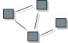

| Artifact: Implementation Model |
 |
|
Purpose
Relationships
| Contained Artifacts | ||
|---|---|---|
| Roles | Responsible: | Modified By: |
| Tasks | Input To: | Output From: |
| Process Usage |
|
|
Tailoring
| Representation Options | UML Representation: Model, stereotyped as <<implementation model>>. The Implementation Model may have the following properties:
An Implementation Model is optional. If you choose to create an Implementation Model, the key tailoring decisions are how to relate between the Implementation Model and Design Model, and which Implementation Elements are important enough to model. Guidance on how to make these decisions is covered in Guideline: Implementation Model. Also see Concept: Mapping from Design to Code. |
|---|
More Information
| Checklists | |
|---|---|
| Guidelines |
© Copyright IBM Corp. 1987, 2006. All Rights Reserved. |